计算机网络
TCP/IP 五层协议
Layer 1
- byte/bit
Layer 2
- Frame
Layer 3 网络层
- 路由选择（使用哪一个链路）
- 监督信息在站点的传递
- Packet
Layer 4 运输层
- 两端站点的监督
- 同 IP 下不同的分发，网络地址的复用 port
- Message
Layer 5 应用层
除此之外，还有 TCP/IP 四层协议以及 OSI 七层模型
The Physical Layer
Transmission
Guided transmission media
Persistent Storage
简单粗暴装到存储装置中物理传输
Twisted Pairs 双绞线
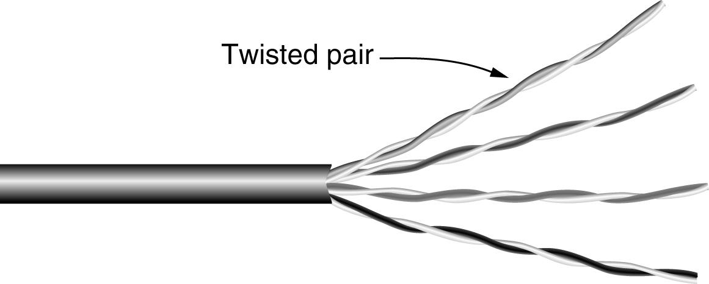
Coaxial Cable 同轴电缆
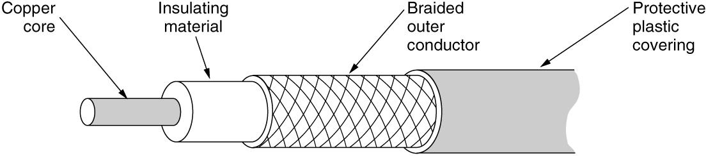
Power lines 电缆
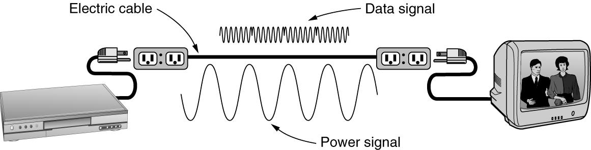
Fiber Optics 光缆
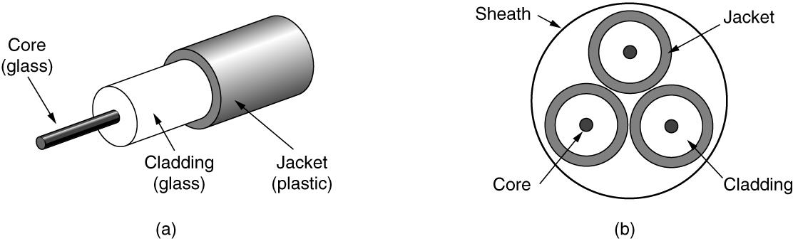
Wireless Transmission
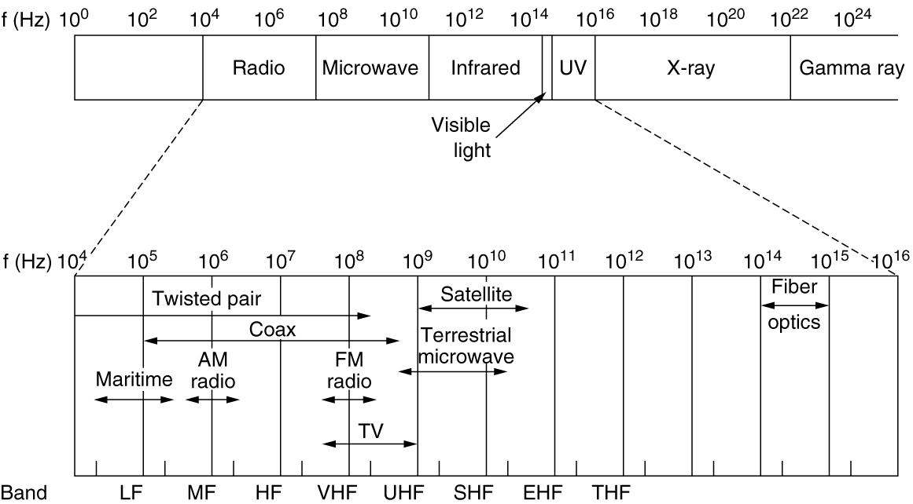
频率越高，带宽越高
Radio Transmission
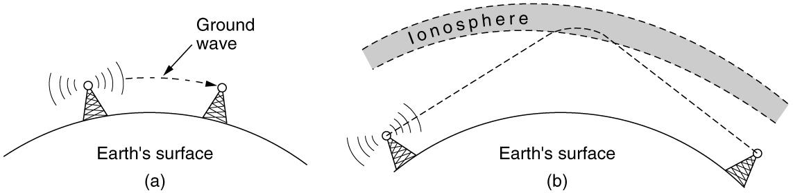
短波可以利用电离层反射
- Communication Satallites
利用卫星做反射端，可以利用除短波以外的波
......
Encoding and decoding
Bandwidth 带宽
- 信道带宽则是信道能通过的最高频率和最低频率之差。
baseband 在频谱中没有调制的信号，其频率范围通常是从零赫兹开始到某一特定的最高频率。
passband 特定频率范围内的信号能够有效传输的频带
The Maximum Data Rate of a Channel
Nyquist's theorem
- Maximum data rate = 2 Blog~2~ V bits/sec
- 为了避免失真，信号的采样频率必须至少是信号带宽（最高频率成分）的两倍。
- V 是信号的离散电平数量。这指的是信号在传输过程中可以取的不同值或状态数量。
- 就是传来了一个信号，我对它进行 2B 的采样，（将模拟信号转化成数字信号）每个采样点的信号代表了 log2 V bit
Shannon’s formula for capacity of a noisy channel
- Maximum data rate = B log~2~ (1 + S/N) bits/sec
- S/N 信噪比
Baseband Transmission
在原始频率范围内直接传输
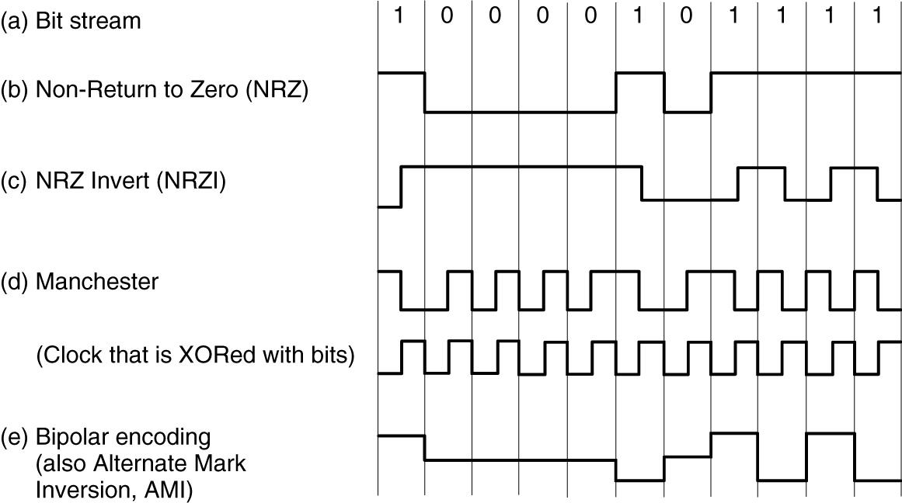
标准电信曼彻斯特编码：
- 0：先为低电平，再变为高电平。
- 1：先为高电平，再变为低电平。
Passband Transmission
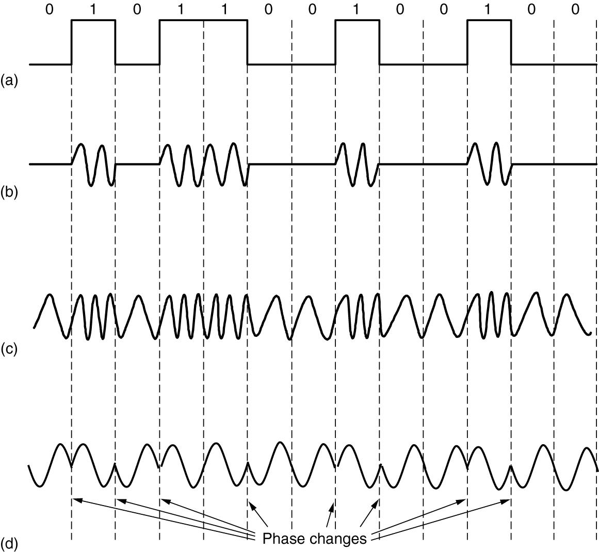
改变相位，幅度，频率来代表不同的信息
下图用相位的变化来表示不同的信息
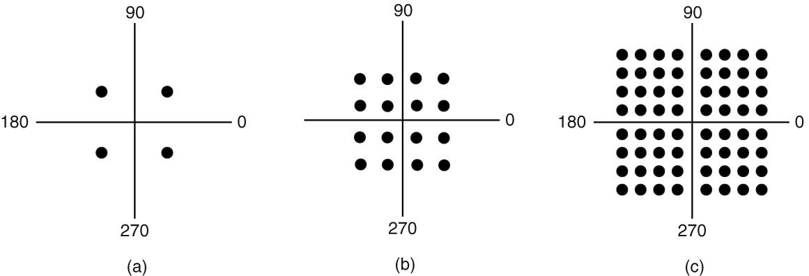
Multiplexing
Frequency Division Multiplexing
Time Division Multiplexing
Code Division Multiplexing
由于信号之间的正交，可以从中提取到自己想要的信号
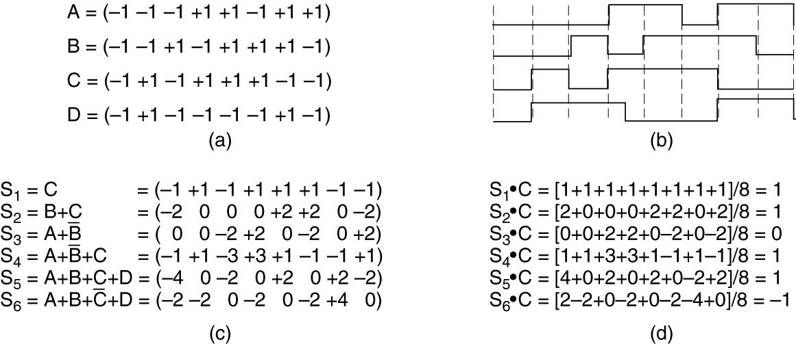
Wavelength Division Multiplexing
波长，用于光纤
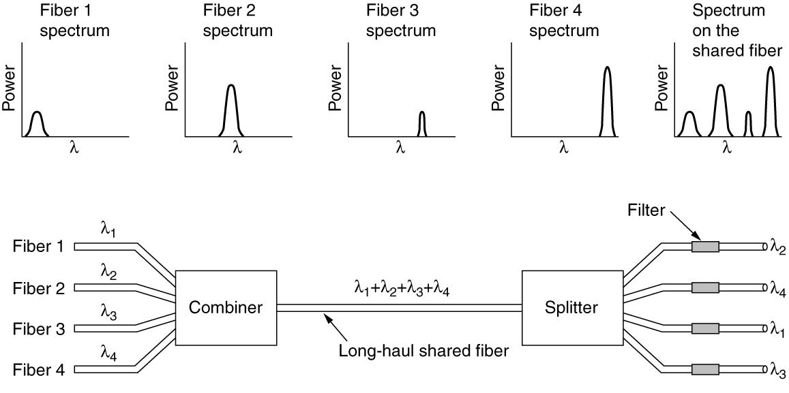
Telephone modem
在电话线上进行信号的传输
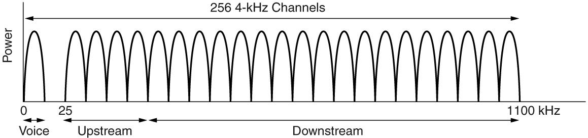
通过分频实现频率的复用
Switching
- Circuit switching: traditional telephone system 电路交换
- Packet switching: voice over IP technology 分组交换